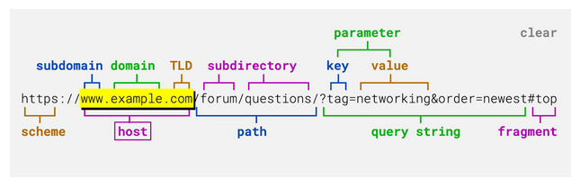

A Top Level Domain (TLD) is the funny characters or words after the (.) in a website. For example, the standard would be (.com) - A top level domain that could be used by basically anyone. Its purpose is to help recognize what the site is. (.org) is for an organization. (.edu) is used for educational institutions such as universities or even middle schools. TLDs are used in the process of Domain Name Systems (DNS). This system converts the name of the site, such as Google.com into an IP address, allows devices to communicate with the server and give the user their request/response.
Here's the “biology” of a link with some extra information if you want to know more.
For the people with no eyes, it's in the [Host] bracket, which contains all the domain parts. Back in the day it was standard to type http:// or www. or the site just wouldn’t load, but now browsers and software are smarter, so we mostly just focus on the name and the TLD. So we can comfortably type something like google.com, and use the TLD to differentiate similar sites — like how hubofjose.com is already taken by a talented artist, but hubofjose.quest is owned by me
< Source: > hubofjose.com
All TLDs are approved by the Internet Corporation for Assigned Names and Numbers (ICANN), jeez what a mouth full - I would’ve name it something like Contracts Licenses for Internet Titles (CLIT) - Anyways, it's a US-based nonprofit that acts as the rule-keeper for domain names. ICANN doesn’t run every TLD itself, there's layers but they are the head technically. But it makes the rules and signs contracts with the groups that do.
The word “owned or owns” on the internet is controversial since copyright and licenses exist to protect property. Which some companies do abuse. BUT, according to Wikipedia, [ Internet Governance Page (https://en.wikipedia.org/wiki/Internet_governance) ] - “no single entity, company, organization or government runs the Internet, it is a globally distributed network” So the internet as a whole cannot be owned by anyone since it is a shared system maintained by many parties. But some are more strict than others.
< Source: > Wikipedia - Internet "Government"
However, there are “operators” that help regulate standards for the internet. They act independently from any big government and some are run by a console/group. Such as the Internet Society (ISOC) or the World Wide Web Consortium, who improve website development. For example: tag - which can technically still be used but it is discouraged. You can still use it but in more modern sites you would see it like on my receipt.
The Internet Engineering Task Force (IETF), now a nonprofit and previously a federal project funded by the US in the 1980s, is responsible for a lot of the actual inner workings of the internet. (Like the real technical stuff — the whole TCP/IP process.) They’re a big reason why packets of data are able to be sent to another device reliably, because how else would we watch funny Instagram reels? They did A LOT more than this. The TCP and IP protocols run over Ethernet and other network tech — Ethernet being “wifi on a leash” So everyone please thank the minds of the IETF.
< Source: > Wikipedia - IETF
The .org top-level domain is one of the original domains on the internet, created in the early 1980s at the same time as the .com, .edu, and .gov TLDs. For about 8 years, .org was run by the Stanford Research Institute with aid from the U.S. government, and during this time domain names were basically given out for free, unlike modern day. But like many things, .org was privatized in 1993 by Network Solutions, which had won the contract to run domain registrations. That’s when the practice of fees started.
Now jump to 1998, when ICANN was made. Their job was/is to separate “registries” (who run the databases for each TLD) from “registrars” (the retail sellers of domain names). BUT, .org was still owned by Network Solutions, then soon after bought by Verisign.
In 2003, Verisign gave up and released .org, because ICANN said it should reflect its original ideas by putting it under a new nonprofit registry that would operate it “by and for” the nonprofit world. That successor ended up being the Public Interest Registry (PIR), created by the Internet Society (ISOC). From 2003 onward, PIR, under ISOC, ran .org as a supposedly public-interest, nonprofit-oriented space.
Fast-forward to 2019. ISOC announced a plan to sell PIR, including its assets. Now we introduce a new player: Ethos Capital. Ethos had a connection to Fadi Chehadé, former ICANN CEO, which made the whole thing look even more suspicious.
NOTE: THE PREVIOUS CEO OF ICANN THOUGHT HE WAS SLICK AND WAS GOING TO GET AWAY WITH TURNING .ORG INTO A PRIVATE-OWNED TLD WHEN IT WAS ORIGINALLY CREATED FOR NON-PROFITS. THAT’S SCUMMY. IT’S LIKE STEALING FROM THE POOR AND PROFITING OFF OF SOMETHING THAT IS FOR THE PEOPLE, WHICH WOULD’VE POSSIBLY-MAYBE-ROUGHLY MADE A BILLION DOLLARS.
ICANN finally blocked the sale in 2020. On paper, .org was “saved” from being swallowed by private equity.
But Ethos didn’t give up. Instead, Ethos bought two huge infrastructure players: Donuts and Afilias. They are registry operators for TLDs (they run the back-end for a bunch of different domain endings).
Registrars like Namecheap, GoDaddy, Squarespace, Porkbun, etc. are the sellers — the places regular people actually buy domains. For me, I went through Porkbun, and the process is that I pay to use the name with .quest for a certain amount of time. That’s the profit part: .com is very expensive to keep renewing compared to something like .xyz or .quest, which can be only a couple of dollars.
Fun Fact: Donuts Inc. has no relation to the food donuts or doughnuts. It wasn’t a clever office-related joke; they named it because it’s easy to remember.
Donuts and Afilias later merged and rebranded as Identity Digital. Together, they control a massive chunk of the newer and “silly” TLDs — all the weird, niche TLDs. So even though Ethos didn’t get .org itself, they still won in the end, because they got the right to sell and profit from a big slice of the modern TLD space.
To me this seems petty, like a rich spoiled child not being able to buy a toy because it sold out. So they just go and buy the toy company to feel better. And I think it’s wrong for a company to do this, because it’s basically a takeover of the space behind the scenes. The internet is no longer user-friendly; it’s not what it was when I started years ago. It’s all ads and sponsorships chasing the dollar. It doesn’t feel genuine anymore – it’s run by money and greed rather than being a community space.
< Sources: >
Donut gets bought out
Ethos Capital New CEO
So there’s layers to TLD’s and the most simple answer is that they live on a computer/server. (No duh but it's who runs it). At the very top of DNS there’s a master index called the root zone. This is basically a tiny master list that says: “here’s every TLD (.com, .org, .io, etc.) and here are the name servers that are in charge of each one.” That's the root.
When DNS was first designed, the system could only list a limited number of root servers in a single 512-byte UDP reply. (That’s 512 bytes = 4096 bits, not MB or KB. THAT’S TINY. My iMac G3’s RAM is more.) So they settled on 13 root server names, labelled A through M. Under each letter there are actually lots of real machines.
Now many years later modern networking and routing has a trick called Anycast. Each “letter” now has many copies and exist all over the world that share the same name and IP. It even has a plan if any goes down all internet traffic would be routed to another one. So the 13 root servers are really 13 names, backed by hundreds of physical servers globally.
Many groups run a certain root letter. ICANN runs L-root. A- and J-root are run by Verisign (a big domain infrastructure company), B-root is run by USC’s Information Sciences Institute (a university lab), E-root is at NASA Ames Research Center, and G-root is run by the U.S. Department of Defense.
< Source: >
ICANN - Root Server Operators
Now there are some names you might recognize: NASA, the U.S. government, universities, and many others I didn’t bother to add since there are like 5 more and I don’t want to write them all.
Now there have been some conspiracies about the Government disturbing these servers but it affects everyone and everyone would notice so you can take your tin foil hat off but the U.S. government is complicated and is guilty of A LOT OF THINGS. I will only say that the government doesn’t need to touch the root servers to control what we see. Enforcing local ISPs and government-controlled DNS servers and firewalls is so much easier and normalized, and that’s a very real possibility in this time. Some places and platforms require a picture of your ID — FUCKING ROBLOX NEEDS IT, YOUTUBE TOO. I’m sorry, is this North Korea or China? That everything I look up has to get passed to the government to see if I’m doing anything that’s “wrong”? I’m not going to go full nomad and abandon tech… (yet) but a real vpn like Mullvad or Proton with a good browser and a Linux Distro and just being careful with what you share is already a huge step toward keeping some privacy.
I’m a big believer in PRIVACY rights BECAUSE it IS IMPORTANT AND NEEDED. Let the government handle its business and let me run my own. Some of these practices on paper sound fine and “for safety,” But the standards they set and the misunderstanding of what they actually want is completely off the walls. In China (since most North Koreans are starving and aren’t fortunate enough to have access to the internet), they don’t even have YouTube — they have sites like Bilibili instead, because they don’t want citizens to freely see the outside world.
These videos from Louis Rossmann, Mental Outlaw and Mutahar (SomeOrdinaryGamers), talk about THESE problems. Youtube happens to be a simple way to learn and show information since modern search engines have gone to shit too.
The .io top-level domain was introduced in 1997 and is the country-code TLD for the British Indian Ocean Territory (BIOT). It was delegated by IANA to a UK-based company called Internet Computer Bureau (ICB), which acted as the registry operator. Later, in 2017, ICB was sold to Afilias, a US-based registry company, and then in 2020 Afilias was acquired by Donuts. In 2022, Donuts and Afilias merged and rebranded as Identity Digital, which still operates .io today.
Even though .io is technically tied to the British Indian Ocean Territory, most of the people using it don’t live anywhere near the Indian Ocean. It’s basically been treated as this iconic gaming TLD. If you wanted to play games during school it was coolmathgames or any io game. A lot of Indie Games also start on a site called itch.io like Buckshot Roulette, DDLC, FNF. So a lot of stuff coming from .io - what a legacy.
It first gained traction because “.io” can be read as Input/Output (I/O), a very common computer concept. To give an idea of how big .io is in that space: GitHub uses it for GitHub Pages sites (username.github.io), if you make an account it will look like that.
Now for the real reason people know .io. A specific game genre, .io games. One very iconic game you have probably heard or played is agar.io. made by Brazilian game developer Matheus Valadares, published by miniclip,
THIS GAME HAD SUCH A INFLUENCE IT WAS LIKE THE BEATLES A FUCK TON OF YOUTUBE VIDEOS, MILLIONS OF DOWNLOADS ON BOTH ANDROID AND IOS STORES - IT SPAWNED SO MANY OTHERS LIKE SLITHER.IO and youtube was in a chokehold of Slither.io. THEN IN THIS POPULARITY MR VALADARES TRIED AGAIN AND MADE ANOTHER BANGER DIEP.IO. (I highly recommend watching this video and the rest of his videos, they are good.)
The UK and Mauritius (a Country that actually exists in the British Indian Ocean Territory) announced an agreement about transferring sovereignty. Since .io is a country-code TLD tied to that territory, some people started asking: what will happen to .io if the territory technically stops existing?
IANA (the part of ICANN that handles top-level domains) normally has a policy that when a country/territory code disappears, its ccTLD is supposed to be phased out within about five years, with SOME exceptions. That’s what happened to .yu (Yugoslavia). On the other hand, .su (for the Soviet Union) is still around decades after the USSR died, so there are precedents for keeping dead country-code domains alive. So the line is blurry and maybe far away, But this isn't the first time the British have messed with foreign territories.
If all hell did break loose and .io got shut down, a lot of different groups would be screwed — not just tiny indie devs hosting .io games, but also big companies and projects that use .io for tools or documentation. And because huge companies like IBM, Ford use it too but Microsoft bought GitHub for around $7.5 billion, they're now DIRECTLY tied to a TLD whose future is messy.
Personally, I don’t expect some sudden mass migration or instant deletion. If there is change it’ll probably be a long, messy transition.
Now for some dead TLDs, .yu WAS for the country Yugoslavia - but the reason why it doesn’t exist now is because Yugoslavia was a country of a bunch of different groups of people that hated each other like old german kingdoms that was "united" (forcefully) under one socialist regime AFTER WW2.
Long story short, the main reasons why .yu died was the death of Josip Broz Tito (the communist leader), a weak government, a lot of violence because of the Yugoslav Wars, economic decline, and the decline of communism in Europe. ICANN pulled the plug in 2010 being the longest “ghost TLD”
you don't know Yugoslavia is now modern-day - Croatia, Montenegro, Serbia, Slovenia, Bosnia and Herzegovina, and Macedonia, I MIGHT BE MISSING SOME. Which now they have their respect ones like .rs (Serbia) and .me (Montenegro)
Some other TLDs that are dead -> .dd for East Germany, but technically never made it to the live root DNS so technically no website ever had .dd because the country unified to one germany
Now for a unique one .cs for Czechoslovakia, which was split peacefully in 1993, which was dropped in 1995 quietly which is kinda disappointing because it has the intials of CS which could've had .cs for "computer science”. Would've been cool.
The TLD ".su" tag, if you don’t know, was designed for the Soviet Union but not when Vladimir Lenin took over, and it wasn't during every “band kid’s” favorite historical leader Joseph Stalin. It was made under Mikhail Gorbachev In 1990, about a year before the USSR would collapse. So the TLD was out of work immediately, yet it still exists now.
For a long time, .su had been very VERY relaxed, it had everything you would want in a TLD outdated rules and lack of any tough oversight, which made it feel like an untouched goldmine for shady use. It’s now run by the RIPN (Russian Institute for Public Networks).
THIS IS WHERE THINGS GET CRAZY, This TLD is known for cybercrimes and having AMERICAN neo-nazi’s, white supremacist sites after they were kicked off more “normal” domains a lot of Phishing, spam and where some unique malware come from.
When ICANN talked about shutting .su down, pushback from Russian organizations and users helped keep it alive.
But the reason .su was created in the first place is that, around that time, a new batch of European country TLDs was introduced, like “.pl” (Poland), “.cs” (Czechoslovakia), and “.yu” (Yugoslavia). Later, Russia itself got its own modern country codes — “.ru” and the Cyrillic “.РФ” — which are the main ones it still uses today, while “.su” just refused to die and turned into this weird Soviet ghost domain.
This doesn't mean that every site under the .su tag is for these activities or people. Like many things on the internet, some of the things that come from it get abused and taken advantage of, which is a shame honestly, because the internet is an amazing tool. Anyone can use any TLD for good or bad (well, not this one specifically, since I think it requires a passport to confirm it), but if someone wanted to make a fun little site like this, or a blog or a portfolio site, and wanted to go the extra mile and actually make it look professional and buy a TLD for a certain period, they should be able to do that without all the baggage.
At the end of the day, top-level domains are just a few letters after a dot, but they carry a stupid amount of history, money, politics, and drama behind them (and probably some secret funding too). Some came from dead countries, some got almost sold off to private equity, some turned into a space for indie games, and some got hijacked by scammers, hackers, and extremists. But because of that history, they’re also the reason random people like me can grab something like .quest and carve out a tiny, weird corner of the web. If there’s anything to learn from all this, it’s that the internet isn’t neutral or simple — it’s messy and shaped by money — so instead of just restricting it, we should teach people, push back, and grow as a community to make this place closer to what it was meant to be: a space to share, create, and pay attention to what’s hiding after the dot.